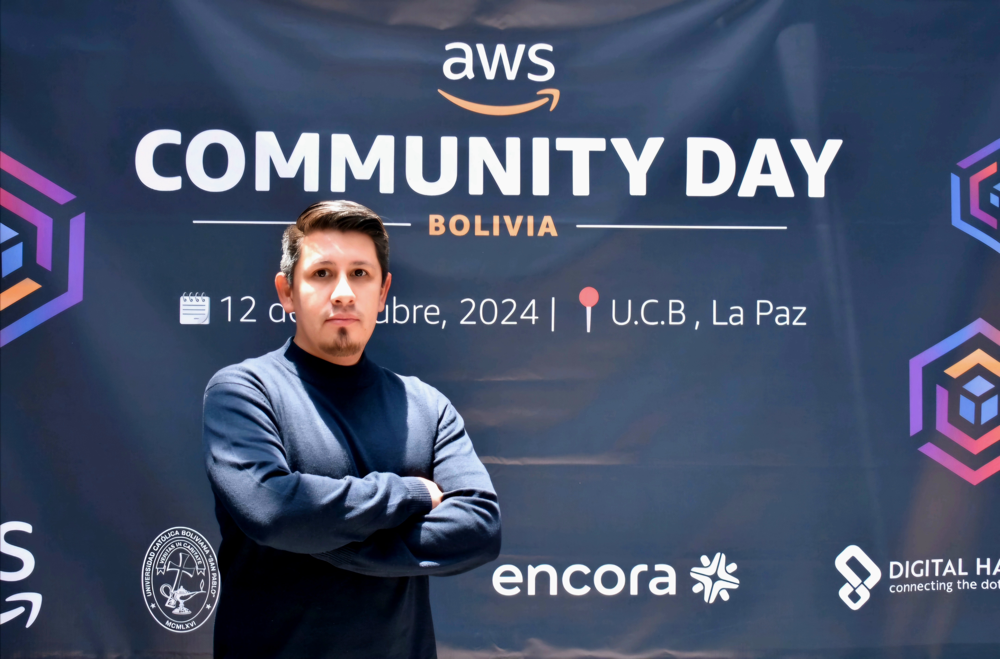
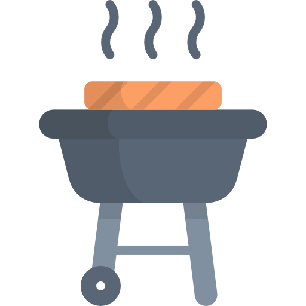

Data Engineer | Web Scraping Specialist
I am a Systems Engineer with a strong focus on Data Engineering and Web Scraping. I specialize in building scalable and resilient data extraction pipelines, transforming raw data into structured, high-quality datasets ready for analysis and downstream processes.
I have hands-on experience developing production-ready scraping solutions using Apify and Crawlee (Cheerio, Puppeteer), including pagination handling, keyword filtering, and data extraction from APIs, DOM parsing, and structured sources (LD+JSON). I also contribute to development, QA, and deployment of these solutions, ensuring reliability, data quality, and maintainable code in production environments.
In the banking sector, I have worked on API development and data processing, ensuring data consistency and reliability. Additionally, I built data pipelines for market analysis in the pharmaceutical industry, combining scraping, cleaning, and transformation processes.
I bring a data engineering mindset to every project: clean outputs, scalable architecture, and efficient data workflows. I am currently looking for remote opportunities where I can contribute with automation, data extraction, and pipeline development.
I know a variety of tools and languages, including:
- Languages: Python, SQL, JavaScript, PHP
- Web Scraping: Apify, Crawlee (Cheerio, Puppeteer), BeautifulSoup
- Data Engineering: Pandas, NumPy, Apache Spark, Kafka, dbt, Airflow
- APIs & Backend: FastAPI
- Databases: PostgreSQL, MySQL, Informix
- Cloud & Storage: AWS, Snowflake
- DevOps: Docker, Git, GitHub

In addition, I have over seven years of experience in the banking sector working with ATMs. I was responsible for hardware maintenance, software configuration, and on-site technical support across multiple cities.
This experience strengthened my problem-solving skills, autonomy, and ownership, as well as my ability to manage client requirements and ensure service quality through structured diagnostic reporting.
Hobbies: Playing soccer, watching movies and TV series, following Formula 1, and spending time with my family.

